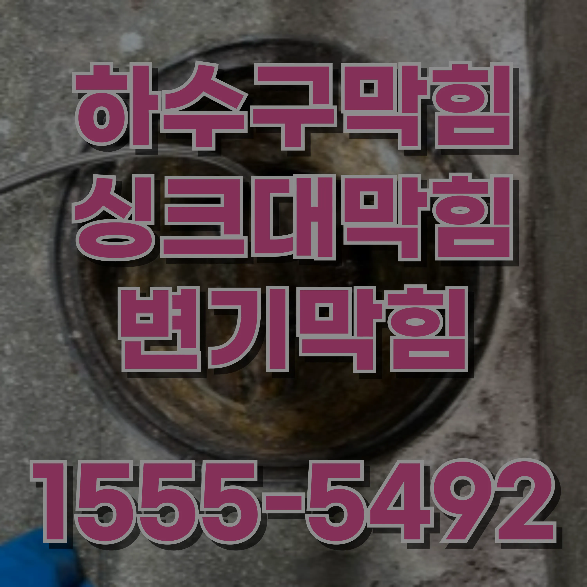
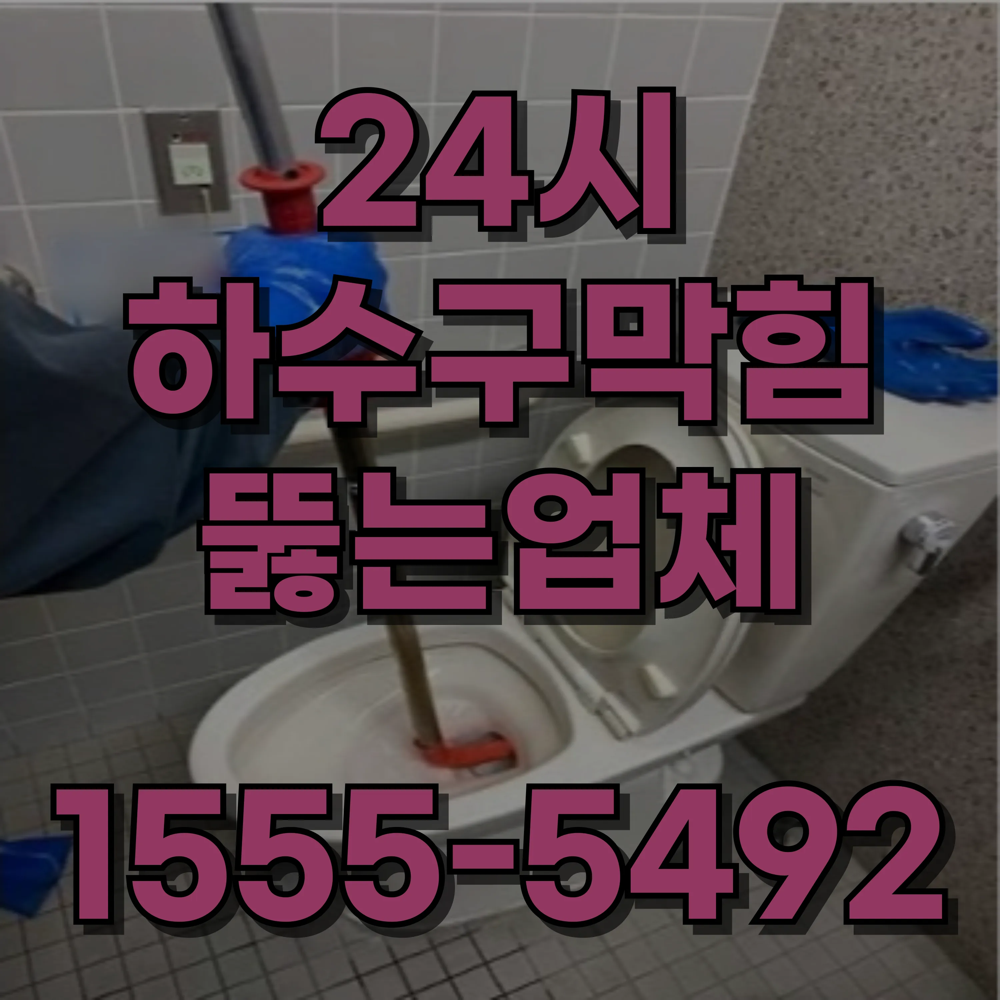
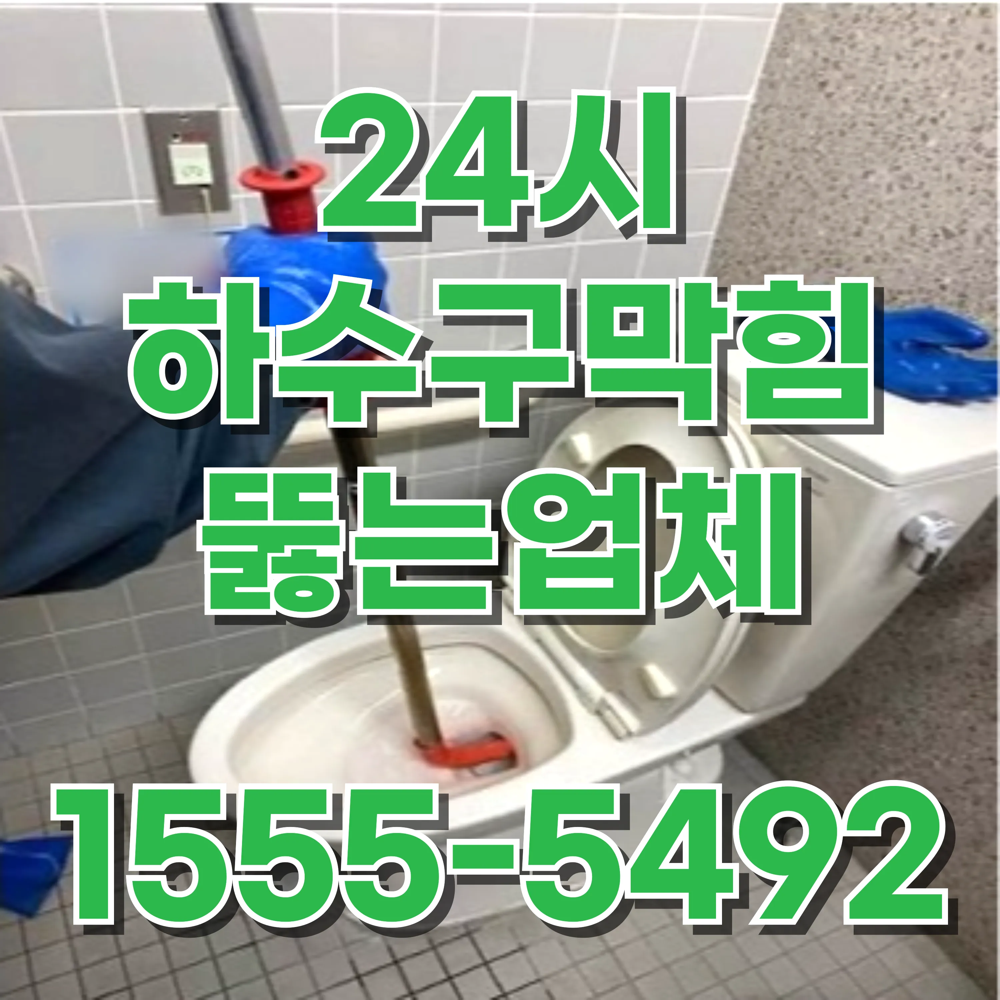

24시간 운영중
월 ~ 일
예지동 하수구막힘 배관막힘 뚫는 업체 싱크대뚫음 후기자연적인 방법으로는 뜨거운 물과 세제를 사용하는 방법도 효과적입니다. 뜨거운 물에 세제를 섞어 변기에 붓고 몇 분간 기다린 뒤 물을 내려보면, 가벼운 막힘은 녹아 없어질 수 있습니다. 이 방법은 화학물질을 사용하지 않아 환경에도 비교적 안전한 편입니다. 다만, 너무 뜨거운 물을 사용하면 변기 소재가 손상될 수 있으므로 주의해야 합니다. 화학적인 방법으로는 배수구 청소제를 사용하는 것이 있습니다. 이 제품들은 강력한 화학 성분으로 막힌 물질을 녹이는 역할을 합니다. 그러나 이러한 제품은 주기적으로 사용하는 것이 바람직하지 않으며, 배관을 손상시킬 위험이 있으므로 신중하게 사용해야 합니다. 특히, 플라스틱 배관이나 환경을 고려한다면 이러한 방법은 가급적 피하는 것이 좋습니다.
예지동 하수구막힘 배관막힘 뚫는 업체 싱크대뚫음 후기문제가 지속될 경우 전문가를 부르는 것이 가장 안전한 선택입니다. 전문가들은 전문 장비와 기술을 이용하여 문제를 정확히 진단하고 해결할 수 있습니다. 특히 하수도 시스템이나 배관의 구조적 결함이 원인일 경우, 개인이 해결하기 어려운 경우가 많으므로 전문가의 도움이 필수적입니다. 또한, 정기적인 배관 점검과 청소는 이러한 문제를 사전에 예방하는 데 효과적입니다. 변기 막힘을 예방하려면 몇 가지 습관을 지키는 것이 중요합니다. 먼저, 변기에는 반드시 물에 녹는 화장지 외의 물건을 버리지 않도록 해야 합니다. 물티슈나 기저귀, 음식물 쓰레기 등은 변기에 넣지 말아야 하며, 이러한 물질들은 일반 쓰레기로 처리해야 합니다. 또한, 사용 후 물을 내릴 때 충분히 내려가는지 확인하고, 배관이 자주 막힌다면 전문가에게 점검을 의뢰하는 것이 좋습니다. 결론적으로, 변기 막힘은 누구나 한 번쯤 겪을 수 있는 문제이지만, 원인을 정확히 파악하고 적절히 대처하면 큰 어려움 없이 해결할 수 있습니다. 또한, 사전 예방 조치를 통해 이러한 문제가 반복되지 않도록 노력하는 것이 중요합니다. 정기적인 관리와 올바른 사용 습관은 변기와 배관의 수명을 늘리고, 불필요한 스트레스를 줄이는 데 큰 도움이 될 것입니다.
예지동 하수구막힘 배관막힘 뚫는 업체 싱크대뚫음 후기내시경을 이용한 점검은 막힘의 정확한 위치와 원인을 파악하는 데 효과적입니다. 또한, 고압 세척기를 이용하면 배관 내부에 쌓인 찌꺼기를 깨끗하게 제거할 수 있습니다. 이러한 전문적인 해결 방법은 단기적으로는 비용이 들 수 있지만, 장기적으로는 배관의 수명을 연장하고 재발을 방지하는 데 큰 도움이 됩니다. 따라서 문제가 심각하거나 반복적으로 발생하는 경우에는 직접 해결하려고 하기보다는 전문가의 도움을 받아 근본적인 문제를 해결하는 것이 현명한 선택입니다.
예지동 하수구막힘 배관막힘 뚫는 업체 싱크대뚫음 후기간단한 방법으로 해결되지 않는 하수구 막힘은 전문가의 도움이 필요합니다. 특히, 배수구에서 악취가 심하게 나거나 물이 전혀 내려가지 않는 경우, 전문가를 부르는 것이 좋습니다. 전문가들은 전문 장비와 기술을 통해 문제의 근본 원인을 찾아내고, 효과적으로 해결할 수 있습니다. 예지동하수구막힘 예지동 하수구막힘 배관막힘 뚫는 업체 싱크대뚫음 후기
 | 문제 | 예방법 | 추가 팁 |
|---|---|---|
| 예지동변기막힘 | 생리대와 물티슈를 변기에 버리지 마세요. | 화장지를 필요한 만큼만 사용하여 막힘을 방지하세요. |
| 예지동싱크대막힘 | 기름이나 기름기를 싱크대에 버리지 말고 종이타월로 닦아내세요. | 거름망을 사용하여 음식물 찌꺼기가 배수구로 들어가지 않게 하세요. |
| 예지동하수구막힘 | 머리카락 필터를 설치하고 사용 후 정기적으로 청소하세요. | 배수구에 뜨거운 물을 한 달에 한 번 부어 비누 찌꺼기를 제거하세요. |